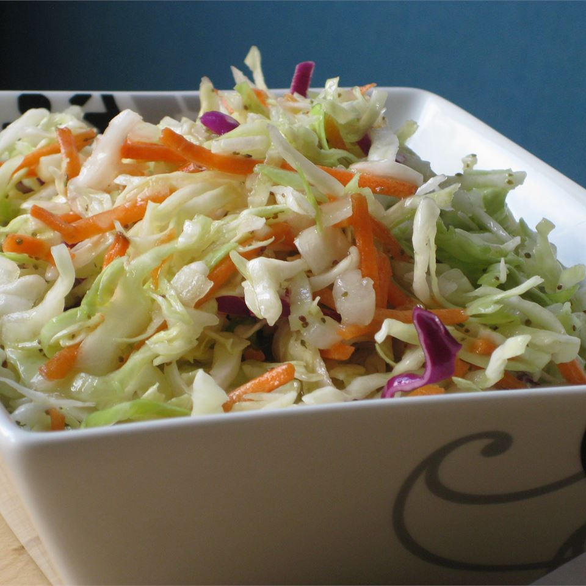

Amish Slaw

Description
Amish Slaw is a type of cole slaw--a side dish consisting of
shredded cabbage--typically excluding the mayonnaise that
traditional cole slaws have.
Ingredients
- 1 medium head of cabbage, cored and shredded
- 1 medium onion, finely chopped
- 1 cup sugar
- 1 cup vinegar
- 1 tsp salt
- 1 tsp celery seeds
- 1 tsp white sugar
- 1tsp mustard
- 3/4 cup vegetable oil
Instructions
- In a large bowl, toss cabbage, onion,vinegar, and 1 cup of sugar together
- In a small saucepan, combine salt, celery seeds, 1tsp sugar, mustard and oil
- Bring to a boil and cook for 3 minutes
- Let cool then pour over cabbage mixture
- Toss to coat
- Refrigerate overnight